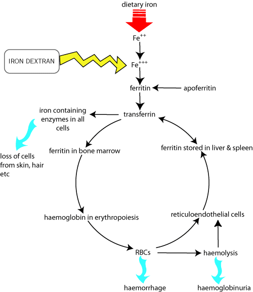

Anaemia
Iron compounds
Iron deficiency anaemia is mainly a disease of piglets kept under intensive conditions. They require about 7mg iron / day which would normally be obtained from eating soil; sow's milk does not contain this amount. If untreated, piglets will develop clinical signs at 3 - 6 weeks old, they are usually given a depot injection of iron in the first week (by the farmer). This is becoming less important as piglets are weaned younger (sometimes 3 weeks old). Rarely, the sow is given iron (must be ferrous salt) most of which passes through her; the piglets obtain the iron by eating the sow's faeces.
Too much circulating iron in the piglet encourages bacteria to grow (iron is necessary for most bacteria and is often a limiting factor in their growth) causing problems like polyarthritis.
Iron dextran is the main form of injectable iron for the treatment of iron deficiency in piglets at 3 days old. It stains meat (and everything else!) yellow so should be injected behind the ear rather than the gluteals.
Gleptoferron is not available in NZ, it is used in same way as iron dextran in piglets.
Various "tonics" for horses are marketed containing ferric (ammonium) citrate; iron must be in the ferrous form (usually ferrous gluconate) to be absorbed orally.
Copper is also necessary for iron utilisation. Ruminants can be deficient in copper and are usually given oral supplements of a variety of trace elements.

| 6 Cardiovascular index |
| |
copyright
Massey University
|